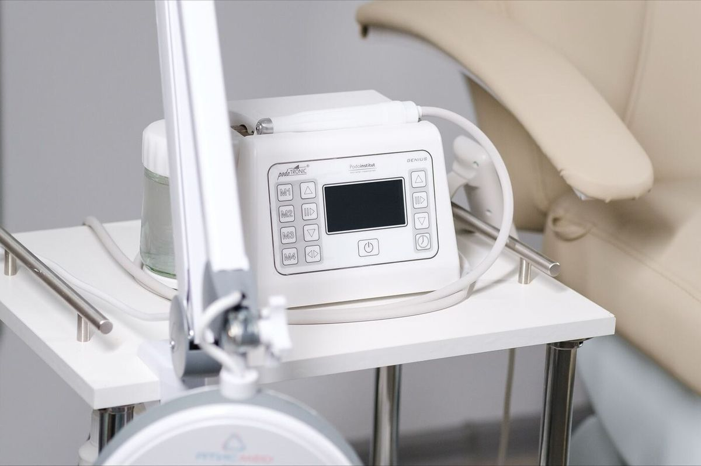
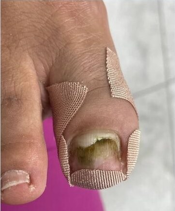
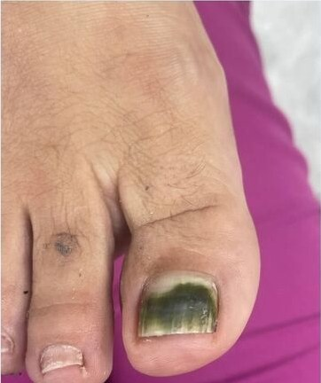
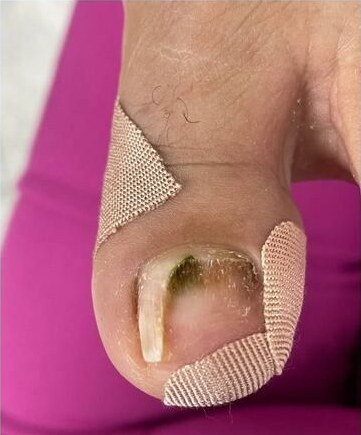
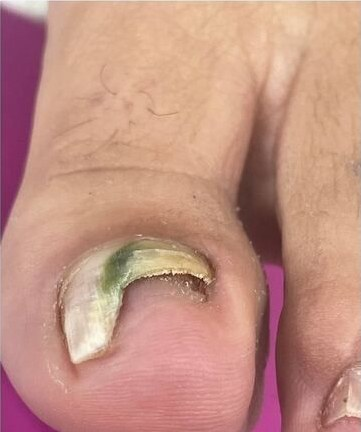
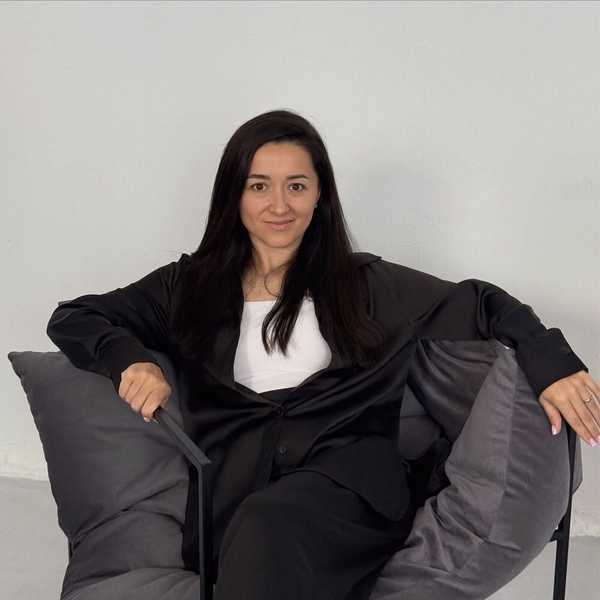

Вросший ноготь
- Уголок ногтя врезается в кожу, валик покраснел или припух
- Больно в закрытой обуви и при ходьбе
- Уже подстригали «уголком», а становится хуже
Узнали? Это к нам. Обрабатываем аппаратом, без боли, и подбираем систему, чтобы ноготь рос правильно.

Уголок ногтя врезается в кожу и больно в обуви? Обработаем без боли
Освобождаем уголок аппаратом и подбираем систему, чтобы ноготь рос правильно. Работаем с вросшими ногтями с 2015 года, студия в центре Минска.
- ≈ 1 часпервый визит, со всеми объяснениями
- от 25 BYNобработка одного угла
- Аппаратбез режущего инструмента
Что это и отчего возникает
Край ногтя начинает давить на кожу сбоку. Кожа отвечает воспалением, и с каждым днём наступать на палец всё больнее.
- Тесная обувьУзкий носок и каблук сжимают пальцы, ноготь упирается в валик
- Подстригли уголкомСлишком коротко или полукругом, край уходит под кожу
- ТравмаУдар, тяжёлый предмет на палец, долгая нагрузка в спорте
- Форма ногтяПластина от природы изогнутая, врастает без внешних причин
Сам по себе вросший ноготь не проходит. Чем раньше начать, тем меньше визитов понадобится и тем проще обойтись без корректирующих систем.
Что это и отчего возникает
Ноготь врастает, когда его край начинает давить на кожу сбоку. Чаще всего причина в тесной обуви, слишком коротком или закруглённом подстригании, травме или наследственной форме ногтя. Кожа отвечает воспалением, и с каждым днём наступать на палец всё больнее.
Сам по себе вросший ноготь не проходит. Чем раньше начать, тем меньше визитов понадобится и тем проще обойтись без корректирующих систем.
Схема, вид сверху. Не медицинская иллюстрация
Что это и отчего возникает
Ноготь врастает, когда его край начинает давить на кожу сбоку. Чаще всего причина в тесной обуви, слишком коротком или закруглённом подстригании, травме или наследственной форме ногтя. Кожа отвечает воспалением, и с каждым днём наступать на палец всё больнее.
Как проходит приём
Сначала осмотр и разговор, потом план. Что именно сделаем, зависит от случая.
Только давит, без воспаления
Что делаемОсвобождаем уголок аппаратом и защищаем валик тампонадой или тейпом. Часто этого хватает, дальше наблюдаем.
- Обработка, 1 угол25 BYN
- Тампонада20 BYN
- Тейпирование15 BYN
Врастает снова и снова
Что делаемСтавим корректирующую систему: титановую нить или скобу ЗТО. Она меняет форму ногтя, пока он отрастает.
- Титановая нить60 BYN
- Скоба ЗТО65 BYN
Валик воспалён и болит
Что делаемСначала снимаем давление и делаем перевязку. Систему ставим, когда воспаление уйдёт.
- Обработка, 1 угол25 BYN
- Перевязкауточняется
Какая ситуация у вас, скажем на осмотре. До начала работы называем цену.
Будет ли больно? При сильном воспалении возможен дискомфорт в первые минуты, об этом предупреждаем заранее. В остальных случаях обработка проходит спокойно.
Как проходит приём
Что сделать до визита, что будет в кабинете и что делать после.
До визитаПодготовка
- Не срезайте уголок сами: край уйдёт глубже, работать будет сложнее
- Обувь, которую легко снять, и чистые стопы, без покрытия на ногте
- Фото можно прислать заранее, назовём цену до визита
На приёмеВ кабинете
- Осмотр под увеличением и вопросы про обувь и привычки
- План и цена до начала работы: тампонада, тейп, нить или скоба
- Обработка аппаратом, при воспалении перевязка
- Тампонада или система на уголок
ПослеДома
- Рекомендации по обуви и уходу под ваш случай
- Дата следующего визита, если он нужен
- Если что-то беспокоит, напишите в мессенджер, ответим в рабочие часы
Будет ли больно? При сильном воспалении возможен дискомфорт в первые минуты, об этом предупреждаем заранее. В остальных случаях обработка проходит спокойно.
Сколько визитов и когда виден результат
Зависит от того, с чем пришли. Три типичных случая.
| Случай | Визитов | Интервал | Когда виден результат |
|---|---|---|---|
| Только давиттампонада или тейп | уточняем | уточняем | уточняем |
| Врастает сноватитановая нить или скоба | уточняем | уточняем | уточняем |
| Валик воспалёнсначала перевязки | уточняем | уточняем | уточняем |
Цифры заполняет студия по своей практике. Точный план скажем на осмотре.
До и после
Потяните границу, чтобы сравнить. Один клиент, два пальца: слева до первого визита, справа сразу после обработки, с тампонадой.


допосле ‹ ›Правая стопа · до первого визита дд.мм → сразу после обработки


допосле ‹ ›Левая стопа · до первого визита дд.мм → сразу после обработки
Фото клиентов студии, без ретуши, публикуем с согласия. Кадры через несколько недель, когда ноготь отрастёт, добавит студия.
Цены
Цены за один угол. Если затронуты оба угла или несколько пальцев, считаем каждый отдельно.
Обработка
Освобождаем край ногтя и снимаем давление
- Обработка вросшего ногтя, 1 угол25 BYNаппаратом, без боли
- Перевязка при вросшем ногтеуточняемпри воспалении, до установки системы
Защита валика
Ставим между ногтем и кожей, чтобы край не давил
- Тампонада, 1 угол20 BYNмягкая прокладка под край ногтя
- Жидкая тампонада, 1 угол30 BYNдержится дольше, не мешает в обуви
- Тейпирование боковых валиков15 BYNтейп отводит кожу от ногтя
Коррекция формы
Меняет форму ногтя, пока он отрастает
- Титановая нить60 BYNнезаметна, носится несколько недель
- Скоба ЗТО65 BYNдля сильной деформации
Цены
Сумма за визит зависит от трёх вещей. Ниже все позиции для вросшего ногтя.
- 1Сколько углов затронутоЦены указаны за один угол. Два угла или несколько пальцев считаем отдельно.
- 2Есть ли воспалениеЕсли валик воспалён, сначала перевязка, система ставится позже.
- 3Нужна ли коррекция формыТитановая нить или скоба, когда ноготь врастает повторно.
Пример: первый визит
- Обработка, 1 угол
- 25 BYN
- Тампонада, 1 угол
- 20 BYN
- Итого за визит
- 45 BYN
Один угол, без воспаления. Точную сумму назовём по фото до визита.
- Обработка вросшего ногтя, 1 угол25 BYN
- Перевязка при вросшем ногтеуточняем
- Тампонада, 1 угол20 BYN
- Жидкая тампонада, 1 угол30 BYN
- Тейпирование боковых валиков15 BYN
- Титановая нить60 BYN
- Скоба ЗТО65 BYN
Цены
Цены за один угол, каждый угол и палец считаем отдельно.
| Услуга | Для чего | Цена |
|---|---|---|
| ОбработкаОсвобождаем край ногтя и снимаем давление | ||
| Обработка вросшего ногтя, 1 угол | аппаратом, без боли | 25 BYN |
| Перевязка при вросшем ногте | при воспалении, до установки системы | уточняем |
| Защита валикаСтавим между ногтем и кожей, чтобы край не давил | ||
| Тампонада, 1 угол | мягкая прокладка под край ногтя | 20 BYN |
| Жидкая тампонада, 1 угол | держится дольше, не мешает в обуви | 30 BYN |
| Тейпирование боковых валиков | тейп отводит кожу от ногтя | 15 BYN |
| Коррекция формыМеняет форму ногтя, пока он отрастает | ||
| Титановая нить | незаметна, носится несколько недель | 60 BYN |
| Скоба ЗТО | для сильной деформации | 65 BYN |
Кто выполняет

Илона
Руководитель центра, подолог. Корректирующие системы, сложные случаи.
Татьяна
Подолог. Тампонады, титановая нить, скобы.
Записаться в студию
Минск, ул. Максима Танка, 20 · ежедневно до 20:00